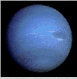
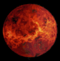
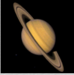
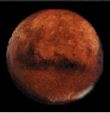

| Information | Neptune | Venus | Saturn | Mars |
|---|---|---|---|---|
| Mass (kg) | 1.02 x 10^26 | 4.87 x 10^24 | 5.69 x 10^26 | 6.42 x 10^23 |
| Diameter (km) | 49528 | 12104 | 120660 | 6787 |
| Mean density (kg/m3) | 1640 | 5250 | 690 | 3940 |
| Escape velocity (m/s) | 23300 | 10400 | 35600 | 5000 |
| Average distance from Sun | 30.07 AU (4,498,252,900 km) | 0.723 AU (108,208,930 km) | 9.537 AU (1,426,725,400 km) | 1.524 AU (227,936,640 km) |
| Rotation period (length of day in Earth days) | 0.67 (19.1 hours) | 243.02 (retrograde) | 0.44 (10.2 Earth hours) | 1.026 |
| Revolution period (length of year in Earth days) | 60,190 (164.8 Earth years) | 224.7 | 29.46 | 686.98 |
|  |  |  |  |